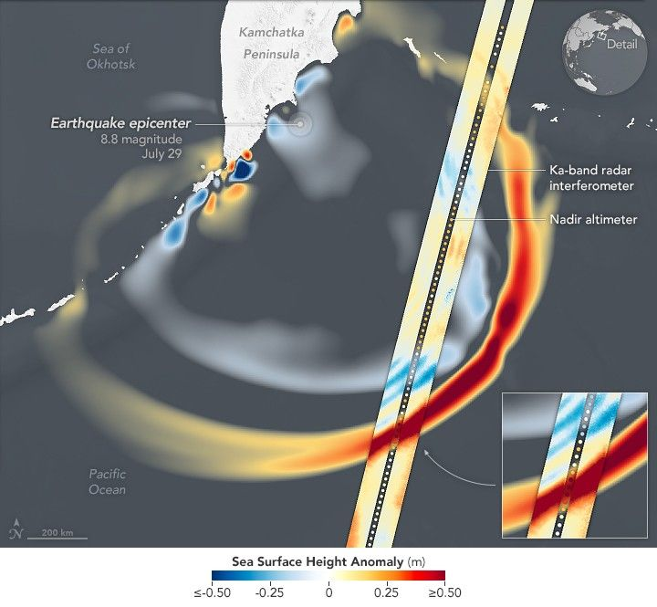

SWOT Spots Tsunami Wave After Kamchatka Quake
The SWOT (Surface Water and Ocean Topography) satellite captured the tsunami spawned by an 8.8 magnitude earthquake off the coast of Russia’s Kamchatka Peninsula on July 30 at 11:25 a.m. local time. The satellite, a joint effort between NASA and the French space agency CNES (Centre National d’Études Spatiales), recorded the tsunami about 70 minutes after the earthquake struck.
Disturbances like an earthquake or underwater landslide trigger a tsunami when the event is large enough to displace the entire column of seawater from the ocean floor to the surface. This results in waves that ripple out from the disturbance, much like how dropping a pebble into a pond generates a series of waves.
“The power of SWOT’s broad, paintbrush-like strokes over the ocean is in providing crucial real-world validation, unlocking new physics, and marking a leap towards more accurate early warnings and safer futures,” said Nadya Vinogradova Shiffer, NASA Earth lead and SWOT program scientist at NASA Headquarters.
Data from SWOT provided a multidimensional look at the leading edge of the tsunami wave triggered by the Kamchatka earthquake. The parallel swaths shown above, acquired by SWOT’s KaRIn (Ka-band Radar Interferometer), show where sea levels were higher than the global average (orange and red) and lower than average (shades of blue). Data from SWOT’s nadir altimeter show the sea surface height in the gap between the KaRIn swaths. In both cases, the darkest red areas are where the wave height exceeded 0.45 meters (1.5 feet).
Play Video: Data provided by the water satellite are helping to improve tsunami forecast models.
NASA Earth Observatory images by Michala Garrison, using SWOT data provided by NASA/JPL-Caltech and a tsunami forecast model provided by the U.S. National Oceanic and Atmospheric Administration (NOAA) Center for Tsunami Research. Story by Jane Lee, NASA/JPL-Caltech, adapted for Earth Observatory.
The SWOT data are overlaid on a forecast model of the tsunami produced by NOAA’s Center for Tsunami Research. Comparing the observations from SWOT to the model, also shown in the animation above, helps forecasters validate their model, ensuring its accuracy.
“A 1.5-foot-tall wave might not seem like much, but tsunamis are waves that extend from the seafloor to the ocean’s surface,” said Ben Hamlington, an oceanographer at NASA’s Jet Propulsion Laboratory in Southern California. “What might only be a foot or two in the open ocean can become a 30-foot wave in shallower water at the coast.”
The tsunami measurements collected by SWOT are helping scientists at NOAA’s Center for Tsunami Research improve their tsunami forecast model. Based on outputs from that model, NOAA sends out alerts to coastal communities potentially in the path of a tsunami. The model uses a set of earthquake-tsunami scenarios based on past observations as well as real-time observations from sensors in the ocean.
The SWOT data on the height, shape, and direction of the tsunami wave are key to improving these types of forecast models.
“The satellite observations help researchers to better reverse engineer the cause of a tsunami, and in this case, they also showed us that NOAA’s tsunami forecast was right on the money,” said Josh Willis, a JPL oceanographer.
The NOAA Center for Tsunami Research tested their model with SWOT’s tsunami data, and the results were exciting, said Vasily Titov, the center’s chief scientist in Seattle. “It suggests SWOT data could significantly enhance operational tsunami forecasts—a capability sought since the 2004 Sumatra event.” The tsunami generated by that devastating quake killed thousands of people and caused widespread damage in Indonesia.